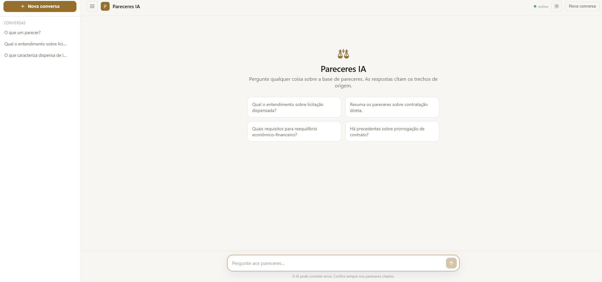
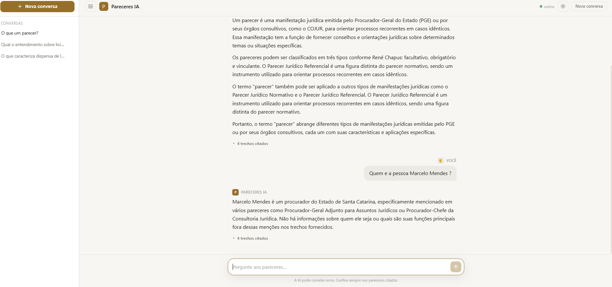
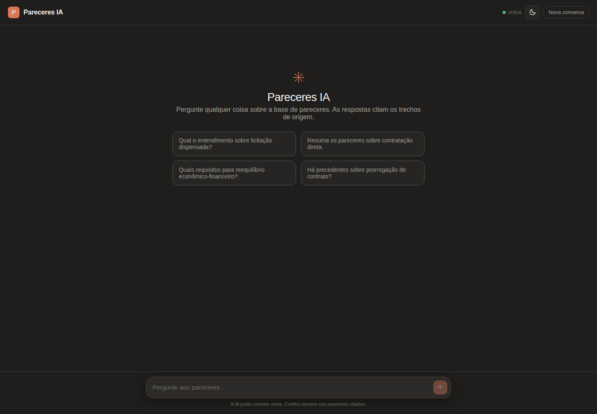

Módulo 05
Pareceres IA
Assistente jurídico conversacional (RAG) sobre uma base real de mais de 46 mil pareceres da PGE — cerca de 730 mil trechos indexados. A pessoa pergunta em linguagem natural e recebe uma resposta transmitida em tempo real e fundamentada, com citação verificável do parecer de origem. A busca full-text foi otimizada para responder em menos de 0,5s mesmo nessa escala, e todo o modelo roda localmente com Ollama — API, banco, documentos e inferência no mesmo ambiente Docker, sem enviar dados sensíveis para fora.

O que entrega
- Interface de chat responsiva com temas claro e escuro
- Resposta progressiva via
/ask/streame Server-Sent Events - Histórico de conversas persistente, com barra lateral e títulos automáticos
- Busca insensível a acento e ranqueada por relevância em ~730 mil trechos
- Ingestão em lote resumível de mais de 46 mil pareceres (Miner/Pareceres)
- Citações expansíveis com arquivo, trecho e relevância da fonte
- Backup/restore versionado para migrar a base entre máquinas
Produto e API
Dados e busca
IA e operação
Pipeline resumível que sobe os PDFs ao MinIO, extrai texto com PyMuPDF (20–40× mais rápido que a extração anterior) e gera ~730 mil chunks a partir de 46 mil pareceres.
Coluna tsvector materializada com índice GIN e estratégia híbrida AND→OR derrubaram a recuperação de dezenas de segundos para menos de meio segundo, com relevância maior.
O Qwen 2.5 sintetiza por streaming usando só os trechos recuperados (com citação verificável), e cada conversa fica salva no histórico — tudo local, sem nuvem externa.
Galeria do módulo
Nova experiência conversacional capturada no ambiente Docker com Ollama e base real.


